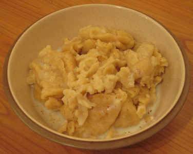

Ou voudrez sans doute saver comment qué l'Vendredi Saint s'pâssit siez nous. Eh bein, j'si content d'vos dithe que j'mé r'souveindrai tréjous d'un jour passé en paix et trantchillité, sans un mot hors de la vaie ni d'un bord ni d'l'autre. Tchi dommage, Moussieu, qué ch'n'est pus tréjous d'même entre un homme et sa femme!
Dans la matinée j'fus faithe une p'tite touonnée dans les clios, et j'm'amûsis pour une pôse à r'garder les p'tits ouaisieaux et lus drôles dé manièthes. Par chein qu'j'en vis, ou bein i'n'savaient pas qué ch'tait l'Vendredi Saint ou lus r'ligion n'en tcheint pas d'compte, car i'taient tous à s'entre faithe la carre sans autchune honte. Sans autchune doute, i'y'ètha d'vant long des p'tites familles dans les fossés et les bouais dé not'e district. Tchi sont heutheux, Moussieu, l's ouaisieaux dé n'aver pas à consulter lus pathens ou l'Recteu d'la paraisse quant i' veulent se mathier! J'éthais voulu en dithe autant à la Merrienne quand jé r'vint, mais ou 'tait d'si bouonne humeur qué jé m'tus. Ou n'approuve pas tréjous des idées tchi m'veinnent dans la tête, ma femme!

Ou m'donnit un boun diné, auvec des fliottes tchi n'taient pas brûles et un poulet qu'oulle avait accaté et rôti sans m'en dithe rein. Auprès chenna, quand j'li eus aidgi à laver la vaisselle, j'm'assis sûs l'sofa pour mé r'poser, et ou s'mint à lièthe en haut un vièr sèrmon tch'avait 'té d'livre par un prédicateur tchi m'éthait effrité par les prédictions tch'i'faisait au sujet dé chein tchi s'arriv'thait pus tard ès gens tch'avaient l'malheur dé s'trouver en enfé quand i'tchittaient la terre. Heutheusement, Moussieu, j'm'endormis d'vant qué j'pusse entendre la pièthe ou j'si convaintchu qué j'n'éthais pas peut freumé les yiers chutte niet-la! Mais, dé bonheu, j'm'revillyis justement en temps pour dithe à la Merrienne quand ou mint bas son livre qué ch'tiat yun des miyeu sèrmons qué j'avais jamais écouté. I'n'faut pas tréjous dithe la véthité si nou veur aver un mio d'paix dans la maison!
Bein seux, quand j'nos mimes à pâsler plus tard, j'avions touos les deux tchiquechose à dithe au sujet du Sénateur John Lé Mérquand. La Merrienne avait liut l'rapport de l'élection sûs la 'Post' et avait veu qué l'proposant dé not'e 'J.J.' avait 'té l'Sénateur Avarne et lé s'condant lé Révérend Quarrie.
'Quant à san proposant' ou s'fit. 'J.J. n'éthait pas peut faithe mûs, car j'ai tréjous yeu hardi d'respect por lé Sieur Avarne dépis l'jour tchi vient au Haut du Mathais, ouèsque y'avait une femme tchi 'tait mouothante. Tu 'té r'souveins, Ph'lip' tch'i'li fit un gros creux dans l'estomac epis la r'couosit, dé tchi qu'ou n'a jamais souffèrt dépis et éthait même êprouvé à marchi l'tou d'l'Ile l'aut'e jour si s'n homme n'avait pas mint san pid bas. Mais àch'teu quant à san s'condant, j'n'ai pas l'honneur dé l'connaitre, mais sans doute lé 'J.J.' est membre de sa congrégation; ch'est p't'êt'e li-meme tchi fait la collecte.'
'Eh bein, Merrienne' j'li dis, n'voulant pas rithe, 'j'crais qu'tu vais un mio vite la. Jé s'sais, bein surprint, en effet, dé saver qué not'e Sénateur a jamais mint les pids dans l'eglyise du Révérend Quarrie.'
'Si ch'est d'même' ou d'mandit 'pourtchi l'chouaisi? A ma veue il éthait fait mus dé d'mander à tchique membre des Etats - not'e Député, par exemplye. Né v'la un homme tch'éthait seu tchi dithe.'
'Sans autchune doute' j'li dis. 'Il éthait peut introduithe 'l'Empire Britannique et suggéther qué si l'Angliéterre avait yeu assez d'hommes du type 'J.J.' I'n'y'éthait pas yeu tant d'bêtises de faites.'
'Il étha une chance dé dithe tout chenna et un mio pus quand veindra l's élections au s'tembre' j'li dis 'mais, pâslant d'ministres, jé n'sais combain qu'not'e Recteur a r'chu de chein qu'nou-s'appèle l'Offrande dé Pâques.'
'J'n'sais pas' ou dit 'mais sans doute i'nos ditha bétôt.'
J'châtchis la tête 'Né crais pas chenna, ma vielle, j'li dis 'car les Recteurs né disent pas tchèsque l'Offrande a produit. J'n'sais pas pourtchi, mais ch'est d'mûme.'
'Oh' ou s'fit 'ch'est drôle assez, mais i'faut craithe qu'les pauvres d'lus pâraisses en profitent.'
J'n'dis rein là-d'sûs, Moussieu, car oulle a grand fouai dans nos Recteurs et ch'est une chose, sans doute, à admither, mais j'admets que j'don'nais quat'e cous pour saver combain qu'autchun d'nos Recteurs donne d's'n Offrande dé Pâques à ses pauvres. Man fis, lé Bram, tchi n'va jamais au tchulte, voudrait dithe qu'les pauvres n'en vaient pas un seul sou, mais ch'est à saver et auprés tout, ch'n'est pas comme si nos Recteurs 'taient si bein péyis. Nou m'a dit qu'la pliupart n'gagnant pas tant comme une tappée d'chais hommes sûs les cauchies tchi travaillent quand i' veulent, mais prennent bouon soin d'êt'e là chaque s'maine pour r'chever lûs sous.
Ach'teu, Moussieu, tchèsqu'ou criyiz du prospect pour la saison des patates? Par ichîn i'sont bein avanchies prèsque partout, mais les vents d'est n'lûs font pas d'bein, et une goutte d'ieau, auve des vents du seur-ouest, est chein qu'nou voudrait aver. J'ai tréjous dit, pourtant, qué j'éthais un fricot d'nouvelles patates chu mais, et j'vis ocquo en espéthance. Nou m'dit qu'y'en avait dans les marchièrs en ville sam'di pâssé à trais ch'lins et d'mi la livre, mais pûstôt qué d'péyi chu prix-là, Moussieu, mé,tchi peut en mangi un couplye d'livres sans m'dérangi pour man thée, j'm'graithais ocquo dé chein tchi reste d'nos vielles. Tchèsqu'ou-s-en dites?
PH'LIP
23/4/1960
Viyiz étout: